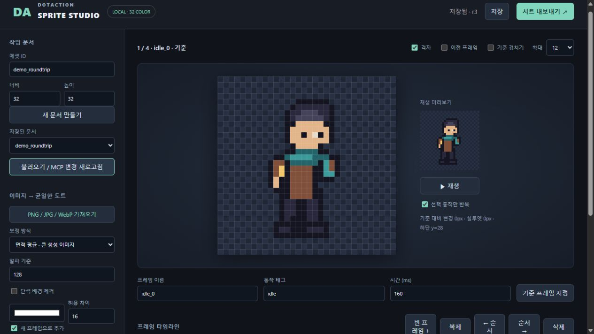
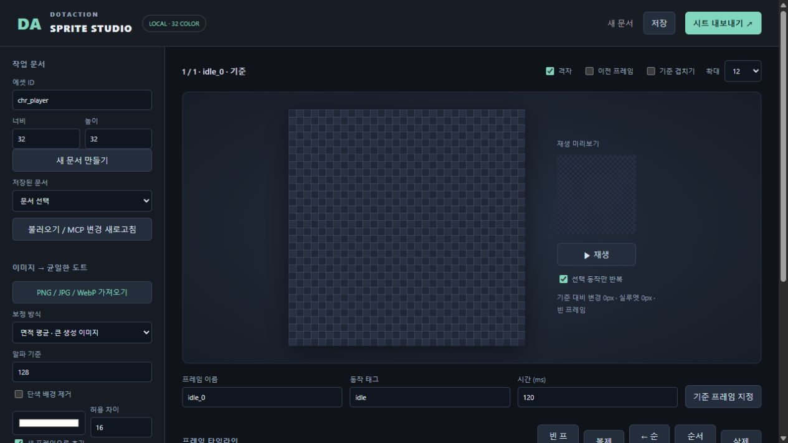

Tracefolio REPORTS & ISSUES
Tracefolio REPORTS & ISSUES DotAction작업 결과
DotAction작업 결과Sprite Studio: 균일 도트 보정·애니메이션 편집·로컬 MCP 구현
부분 완료도트 보정·픽셀 드로잉·프레임 편집기와 MCP 11개 도구를 구현했습니다. 실제 MCP 드로잉·브라우저 저장·Aseprite 출력·Unity 임포트를 확인했으며 현재 대화의 MCP 도구 노출은 미확인입니다.
작업 결과
생성 이미지나 기존 도트 이미지를 고정 격자와 공통 32색으로 보정하고, 프레임별로 편집·재생·저장하는 로컬 도구를 구현했습니다. PNG 스프라이트 시트·프레임 JSON·Aseprite 원본을 출력합니다.
실제 MCP에서 32×32 캐릭터 초안을 그려 4프레임 대기 예제를 생성했습니다. Unity에는 시트 분할·클립·컨트롤러·프리팹 생성 도구를 추가했습니다. 이미지 생성 모델 자체는 포함하지 않으며, 호스트 생성 도구의 결과를 가져오거나 MCP로 픽셀을 직접 그립니다.

변경 내용
적용 내용
핵심 변경과 원본 코드
보정 로직은 UI와 MCP가 공유합니다. 아래는 public/core.mjs의 normalize 함수 전체입니다. 격자 보정은 형태 동일성을 자동 보장하지 않습니다.
export function normalize(data, sw, sh, doc, { threshold = 128, mode = 'area', background = null, tolerance = 0 } = {}) {
integer(sw, 1, 8192); integer(sh, 1, 8192); integer(threshold, 1, 255); integer(tolerance, 0, 255);
if (data.length !== sw * sh * 4 || !['area', 'nearest'].includes(mode)) throw Error('입력 이미지 오류');
if (background !== null && (!Array.isArray(background) || background.length !== 3 || background.some(v => !Number.isInteger(v) || v < 0 || v > 255))) throw Error('배경색 오류');
const out = Array(doc.width * doc.height).fill(-1), cache = new Map();
for (let y = 0; y < doc.height; y++) for (let x = 0; x < doc.width; x++) {
let r = 0, g = 0, b = 0, alpha = 0, weight = 0;
const x0 = x * sw / doc.width, x1 = (x + 1) * sw / doc.width;
const y0 = y * sh / doc.height, y1 = (y + 1) * sh / doc.height;
const nearest = mode === 'nearest';
for (let sy = nearest ? Math.min(sh - 1, Math.floor((y0 + y1) / 2)) : Math.floor(y0); sy < (nearest ? Math.min(sh - 1, Math.floor((y0 + y1) / 2)) + 1 : Math.ceil(y1)); sy++) {
for (let sx = nearest ? Math.min(sw - 1, Math.floor((x0 + x1) / 2)) : Math.floor(x0); sx < (nearest ? Math.min(sw - 1, Math.floor((x0 + x1) / 2)) + 1 : Math.ceil(x1)); sx++) {
const i = (sy * sw + sx) * 4;
const w = nearest ? 1 : (Math.min(x1, sx + 1) - Math.max(x0, sx)) * (Math.min(y1, sy + 1) - Math.max(y0, sy));
let a = data[i + 3] / 255;
if (background && Math.max(...background.map((c, j) => Math.abs(c - data[i + j]))) <= tolerance) a = 0;
r += data[i] * a * w; g += data[i + 1] * a * w; b += data[i + 2] * a * w; alpha += a * w; weight += w;
}
}
if (!alpha || alpha / weight * 255 < threshold) continue;
const rgb = [r / alpha, g / alpha, b / alpha].map(Math.round), key = rgb.join(',');
if (!cache.has(key)) {
let best = 0, distance = Infinity;
doc.palette.forEach((c, i) => { const d = c.reduce((s, v, j) => s + (v - rgb[j]) ** 2, 0); if (d < distance) { distance = d; best = i; } });
cache.set(key, best);
}
out[y * doc.width + x] = cache.get(key);
}
return out;
}
flowchart LR A[원본 이미지 보존] --> B[고정 격자 면적 샘플링] B --> C[알파 임계값] C --> D[공통 팔레트 최근접 색] D --> E[프레임 픽셀 수정]
flowchart LR A[기준 이미지 확인] --> B[프레임 복제] B --> C[MCP 픽셀 드로잉] C --> D[실루엣 비교와 재생] D --> E[시간과 태그 저장]
flowchart LR
A[UI 또는 MCP 저장] --> B{revision 일치}
B -->|아니오| C[충돌 거부]
B -->|예| D[원본 JSON 저장]
D --> E[PNG와 JSON 출력]
D --> F[Aseprite 원본 생성과 재열기]
flowchart LR A[Unity 시트 선택] --> B[Multiple 프레임 분할] B --> C[태그별 시간 키 생성] C --> D[AnimationClip] D --> E[Controller와 프리팹 저장]
전체 처리 코드 · 저장·출력 코드 · MCP 서버 · Unity 시트·클립 생성 전체 클래스 · Aseprite 원본 변환 전체 스크립트
대화 기록
- 사용자: “생성한 이미지를 균일한 도트로 보정하고 애니메이션까지 편집해서 스프라이트 시트로 내보내는 툴”과 MCP 제작 요청.
- AI: 고정 팔레트·기준 프레임·공유 처리 로직을 선택. Unity와 분리해 로컬 편집기 구현.
- 사용자: “결과 보고서 작성을 안 하는 것 같은데 작성 부탁함”.
- AI: Tracefolio JSON v2·전후 화면·실제 실행 근거로 보고서 등록 진행. 개별 대화 시각은 미기록.
검증
실제 화면 전후
신규 도구라 기존 편집 화면은 없었습니다. 첫 실행의 빈 문서와 실제 MCP 제작 후 다시 연 문서를 비교합니다.

- MCP 공식 SDK 클라이언트로 11개 도구를 발견하고 create/draw/duplicate/save/reference/export 호출을 실행했습니다. 편집기 서버가 열린 상태와 종료된 독립 stdio 상태에서 실제 출력했습니다.
- 4프레임·각 32×32·128×32 PNG와 JSON을 확인했습니다. MCP 출력 기록
- 브라우저에서 실제 PNG 시트를 4개로 분할·보정하고 새 문서 저장·재열기를 실행했습니다. 시간 160ms 수정 후 저장·재열기에서 값이 유지됐습니다.
- 첫 저장 ENOENT를 발견해 save 처리 순서를 수정했습니다. 시간값 입력 반영도 수정 후 실제 재열기로 확인했습니다.
- Aseprite 실행 파일에서 .aseprite 생성·재열기 후 프레임 수·시간 일치, nativeWarning=null을 확인했습니다.
- Unity 6000.0.83f1 실제 배치 실행에서 SPRITE_STUDIO_IMPORT_OK: 4 frames 및 종료 코드 0을 확인했습니다. .anim/.controller/.prefab 생성과 스프라이트 참조 키를 확인했습니다. 최종 배치 실행도 종료 코드 0이며 최종 clip_0.anim의 m_StopTime: 0.64, 참조 키 0/0.18/0.32/0.5/0.64초를 확인했습니다.
- 새 자동 테스트·회귀 테스트는 작성하거나 실행하지 않았습니다. 위 기록은 실제 대상의 편집·저장·출력 실행입니다.
- 지침 검토: 병행 작업의 신규 프로젝트 지침에 Studio 전용 기준을 통합했습니다. 기존 전역 지침 변경 없음. 샘플 환류는 도구 흐름 안정화 후 검토하며 이번에는 별도 제품 도구로 보존했습니다.
남은 사항
현재 대화 도구 목록에서 새 MCP 노출은 미확인입니다. 등록은 완료했으며 새 연결에서 확인해야 합니다. Unity 게임 플레이 화면·상태 전이와 최종 캐릭터 아트 승인은 미확인입니다. 생성 모델의 자세 일관성은 수동 검토가 필요합니다. 독립 생성 API는 구현 범위에 포함되지 않았습니다. 공개 배포와 첨부 접근은 푸시 이후 별도로 확인합니다. 병행 아트 작업에서 등록한 DotAction 로고를 보존했으며, 이 보고서 썸네일은 실제 편집 화면을 사용했습니다.
작업 시간
- 제안 시간: 시작 2026-11-16 17:13:20 KST, 최초 제안 40~60분.
- 실제로 완료된 시간: 구현·설치·실행 확인 및 보고서 본문 완료: 2026-11-16 17:38:39 KST, 실측 25분 19초. 공개 배포 확인 시간은 최종 채팅에 별도 보고합니다.
- XERJ: 미사용 — 사용자 지침에 따라 rg로 로컬 문서·코드 검색. 공식 MCP·Aseprite·Unity API 문서 확인.